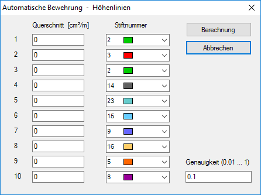

")
Konfiguration und Start der BAMTEC-Berechnung.
Sie können nach Bestätigung aller Angaben mit der Schaltfläche Fertig eine TEC-Datei erzeugen. Wenn Sie zuerst nur die Teppichgeometrie festlegen möchten, ohne die Bewehrung zu bearbeiten, klicken Sie bei Erscheinen des Dialogs auf Fertig, um nur den Teppichumriss und die BAMTEC-Symbole zu erzeugen.
Registerkarten
Landesnormen Norm für die Berechnung der Verankerungs- und Übergreifungslängen. Verbundbedingungen Verbundbedingungen für die Berechnung der Verankerungs- und Übergreifungslängen. Bewehrungsparameter Eingabe der Bewehrungsparameter. Stahlgüte (MN/m²) Wählen Sie die benutzte Stahlgüte in der Auswahlbox aus oder geben Sie die Streckgrenze (fyk) ein. Betongüte (MN/m²) Stellen Sie die nötige Betongüte ein. Stahloberfläche Wählen Sie die vorhandene Stahloberfläche aus. Versatzmaß Angabe des Versatzmaßes (a1).
Berechnungsparameter Eingabe der Berechnungsparameter. Längenstaffelung Die Stablängen werden auf das eingestellte Maß aufgerundet, sofern sie nicht an die Umrissgeometrie stoßen. Lückenstoß Stäbe, deren Anfang und Ende sich um weniger als das eingestellte Maß nähern, werden zu einem Stab verschmolzen. Bei unterschiedlichen Durchmessern kann zusätzlich das Verhältnis der Durchmesser berücksichtigt werden. Werden unterschiedliche Durchmesser zusammengefasst, wird immer der größere genommen. Querschnittserhöhung Hiermit können Sie die as-Werte erhöhen. Randabstand Verschiebung der Stäbe in Richtung rechtwinklig zum Bewehrungswinkel. Verhältnis Durchm. [%] Beim Lückenstoß kann zusätzlich der Unterschied der Durchmesser beachtet werden. Damit können Sie vermeiden, dass ein sehr dünner Stab mit einem dicken Stab verschmolzen wird.
|
|||||||||||||||

Grundbewehrung Entscheiden Sie, ob ohne oder mit Grundbewehrung aus Stabstahl oder Matten gearbeitet werden soll. Geben Sie immer einen Abstand ein, darauf beziehen sich die Abstände der Zulagen. Mattenbewehrung Die Eingaben werden aktiviert, wenn Grundbewehrung aus Matten gewählt wurde. Die Mattenverlegung entspricht der Methode [Matten | VerPol]. Die Matten werden in Bewehrungsrichtung verlegt. Bei Q-Matten müssen Sie die Matten in beiden Richtungen angeben, damit die as-Werte in X- und Y-Richtung abgezogen werden. Grundbewehrung aus Stabstahl Sie können einen oder mehrere Durchmesser wählen. Klicken Sie dazu in das Feld unterhalb des Durchmessers. Ab. [cm²/m] Abdeckung: Querschnitt des größten gewählten Durchmessers. Ab. [%] Abdeckung des maximalen as-Wertes durch den größten gewählten Durchmesser. Beachten Sie, dass es sich dabei um eine ÑSingularitätì handeln kann. Zulagebewehrung aus Stabstahl Die Zulagen werden zwischen die Grundbewehrung gelegt. Wenn Sie die Bewehrung ohne Grundbewehrung ausführen, werden die Zulagen in gleicher Weise verlegt. Abstand [m] Klicken Sie einen Wert in der Ausklappliste an oder tippen Sie den Abstand ein. Hinzufügen Klicken Sie auf diese Schaltfläche, damit der Abstand in die Tabelle aufgenommen wird. Entfernen Es wird die markierte Zeile entfernt. Tabelle Klicken Sie in der Zeile der gewünschten Zulage auf ein oder mehrere Felder unter den Durchmessern.
Beispiel Darstellung einer möglichen Einteilung der Zulagen. Die Abstände werden immer von der Grundbewehrung gemessen. Beachten Sie die Einhaltung von Rüttellücken.
|
Die Funktionen auf dieser Seite sind erst dann sinnvoll, wenn die Bewehrung durch RECHNEN generiert wurde. Bevor Sie die Aktionen ausführen können, müssen Stäbe markiert sein. Die Selektion kann nur von dieser Seite aus erfolgen. Damit der Cursor auf der Zeichnung aktiviert wird, klicken Sie am besten auf die Titelleiste der Zeichnung.
Stabänderung
Bewehrungsgehalt Neben dem AsAbzh haben Sie hier eine weitere Möglichkeit, die as-Werte zu manipulieren. Führen Sie diese Aktion aus, bevor Sie Stäbe ändern!
Höhenlinien berechnen Das Programm bietet zwei Arten von Höhenlinien an. Wenn Sie auf dem Plan die zugehörigen Höhenlinien darstellen wollen, müssen Sie diese erzeugen. Das Programm teilt den Bereich von 0 - max as in zehn gleiche Abschnitte. Für jeden Abschnitt können Sie eine andere Farbe wählen. Diese wird nur am Bildschirm benutzt. Wenn die Zeichnung generiert wird, wird Stift 1 benutzt. Sie können die Werte auch durch eigene Werte ersetzen. Wenn Sie nicht alle Bereiche benutzen möchten, setzen Sie den Wert auf 0 (Null). Die Genauigkeit teilt die Isolinien in entsprechend kleine Teillinien.  Tragbänder Beachten Sie, dass die Stäbe von mindestens zwei Tragbändern gehalten werden müssen. In der Tabelle werden Meldungen angezeigt, wenn bestimmte Regeln verletzt werden. Die Stäbe werden in der Zeichnung gestrichelt dargestellt und wenn die Durchmesser angezeigt werden, werden die Meldungsnummern als Kopfnote an die Durchmesser geschrieben.
Verschiebung [m] Drücken Sie auf die Schaltfläche , um die Tragbänder um 5 cm nach rechts in Ausrollrichtung zu verschieben. Stäbe auch verkürzen Wenn Stäbe zu dicht (2,5cm) vor oder hinter einem Tragband enden, können die betroffenen Stäbe vom Programm auf das Mindestabstandsmaß verkürzt werden. Sonst müssen Sie die Stäbe über das Tragband verlängern. Tabelle mit Meldungen In der Tabelle werden alle vorkommenden Meldungen zusammengefasst. Auf welchen Stab sich welche Meldung bezieht, erkennen Sie an den Stäben. Hier wird die zutreffende Meldungsnummer als Kopfnote an den Durchmesser geschrieben. Wenn alle Parameter richtig eingestellt wurden, erscheint die Meldung "Teppich ist OK". |


Anzeige Hier steuern Sie die Anzeige für die Bearbeitung. Schalten Sie nur die Elemente ein, die zurzeit bearbeitet werden. Die Anzeige wird sofort aktualisiert.
Anzeige / Liste Abhängig von der Anzahl der gewählten Zulagen, können Sie diese, neben der Grundbewehrung, ein- und ausblenden. Matten Sofern Sie Matten als Grundbewehrung gewählt haben, können Sie diese ein- bzw. ausschalten. Durchmesser Die Dicke wird in der Stabmitte angezeigt. Die Einstellung der Textgröße finden Sie auf der Registerkarte Bearbeiten. As-Werte Die aktuellen as-Werte werden angezeigt. Sie werden nicht in die Zeichnung übernommen! As-Punkte Die Lage der Punkte kann angezeigt werden. Das ist für die Lage der Kreise geänderter Bewehrungsgehalte hilfreich. Höhenlinien Die Höhenlinien nicht abgedeckter Bereiche und die as-Höhenlinien können ein- und ausgeschaltet werden. Übernahme Höhenlinien Restbereich Wenn Sie den Haken setzen, werden die Bereiche, die nicht abgedeckt sind, auch auf der Zeichnung dargestellt. Benutzerdefiniert Die manuell erzeugten as-Höhenlinien werden in die Zeichnung übernommen. Hier wird für alle Linien Stift 1 benutzt. Zusätzlich wird an verschiedenen Stellen der Höhenwert in die Linien geschrieben. Gewicht Es werden die aktuellen Gewichte für den Rundstahl und ggf. die Matten angezeigt. Positionsliste In der Positionsliste werden alle Positionen, sortiert nach Durchmesser und Länge, angezeigt. Die in der Liste markierten Positionen werden, sofern sie sichtbar sind, am Bildschirm ebenfalls markiert. Die Selektion in der Tabelle erfolgt nach den Regeln von Windows®: bei gedrückter Strg-Taste plus die linke Maustaste (LM) werden die einzeln angeklickten Positionen angezeigt und bei gedrückter Umschalt-Taste + LM werden alle Positionen zwischen dem ersten und letzten Klick markiert. |
Schaltflächen
Verwenden Sie die Schaltflächen im unteren Dialogbereich, um Änderungen zu übernehmen oder die vorherigen Parameter wiederherzustellen.
Setzt die zuletzt geänderten Parameter schrittweise zurück. |
|
Stellt zurückgesetzte Änderungen schrittweise wieder her. |
|
Beendet die Bearbeitung und legt die Bewehrung oberhalb der vorhandenen Zeichnung ab. Öffnet den Dialog Projektangaben für TEC-Datei. Falls die Bewehrung teilweise oder vollständig nicht abgeschlossen werden kann, werden Sie durch eine entsprechende Meldung darauf hingewiesen. |
|
Berechnet die Bewehrung und aktualisiert die Zeichnungsdarstellung. Wenn Sie nach dem Bearbeiten von Stäben nochmals rechnen lassen, wird der Ursprungszustand wiederhergestellt. |
|
Die Bewehrungsdarstellung wird gelöscht und der Dialog wird geschlossen. Veränderte Parameter werden nicht gespeichert. |
Siehe auch: